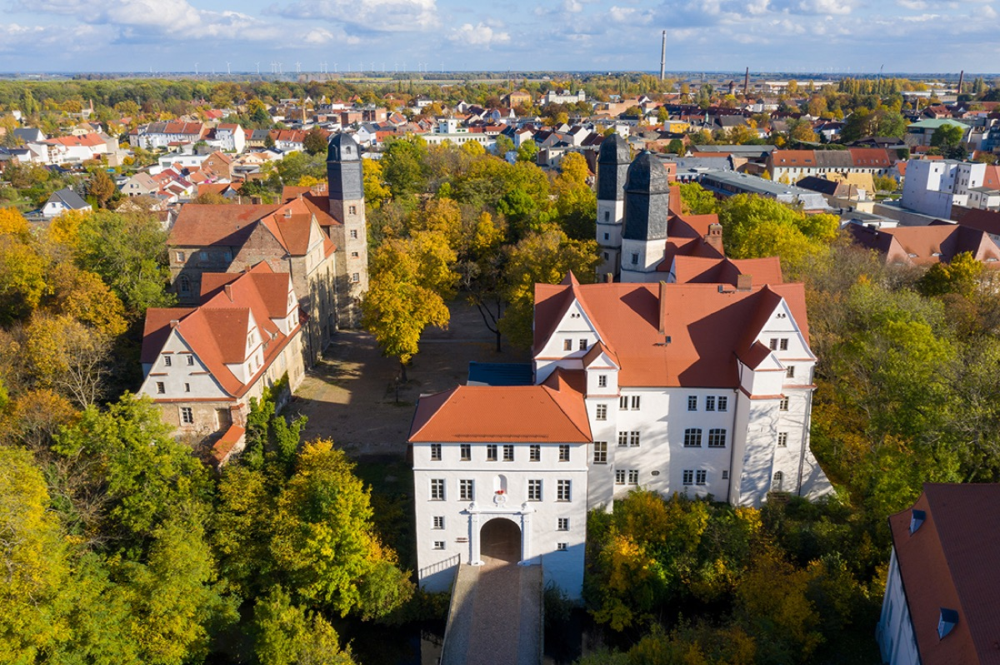

Cöthen (today Köthen), Principality of Anhalt-Cöthen

The town then. A residence town of roughly 3,000 people in Anhalt, on the flat country between Magdeburg and Halle — one of the hundreds of miniature sovereign states that made up the Holy Roman Empire. Everything centered on the prince's castle (Schloss Köthen), a Renaissance complex with a hall of mirrors (the Spiegelsaal) where the court Capelle performed. The principality was officially Calvinist (Reformed), though a Lutheran church, St. Agnus, existed for the minority — the Bachs worshipped there, and it's one reason we know his personal Lutheranism stayed active even when his job didn't require it.
The court. Small but musically extraordinary: Prince Leopold's Capelle of roughly seventeen or eighteen musicians included former members of the disbanded Prussian royal orchestra in Berlin — virtuosi on violin, viola da gamba, cello, flute, oboe. There was no grand organ and no church-music duty; music at Cöthen meant chamber and orchestral music for the court's pleasure, birthday and New Year serenatas for the prince, and Leopold himself often playing along.
What Bach's daily work looked like. Rehearsals and performances at the castle (the Capelle played regularly, often in Leopold's chambers), composing to no fixed liturgical calendar — the only recurring deadlines were the prince's birthday (December 10) and New Year's Day — plus teaching his own children and private students. Compared to Weimar's court hierarchy and Leipzig's crushing weekly schedule, Cöthen offered the closest thing to compositional freedom Bach ever had.
Journeys from here. Twice to Carlsbad (the Bohemian spa) in the prince's entourage; to Berlin in 1719 to purchase a great harpsichord by Michael Mietke — the trip on which he met the Margrave of Brandenburg; to Hamburg in 1720, where the aged Reincken heard him improvise; ultimately to Leipzig in 1723, and back once in 1729 for Leopold's funeral.
What survives today. Schloss Köthen still stands; its Spiegelsaal and the Bach memorial rooms host a Bach festival (Köthener Bachfesttage). St. Agnus church survives, as does the Bach family's parish record trail — including the burial record of Maria Barbara.
Wolff, The Learned Musician, ch. 7
Gardiner, Music in the Castle of Heaven, ch. 6
→ full bibliography & links